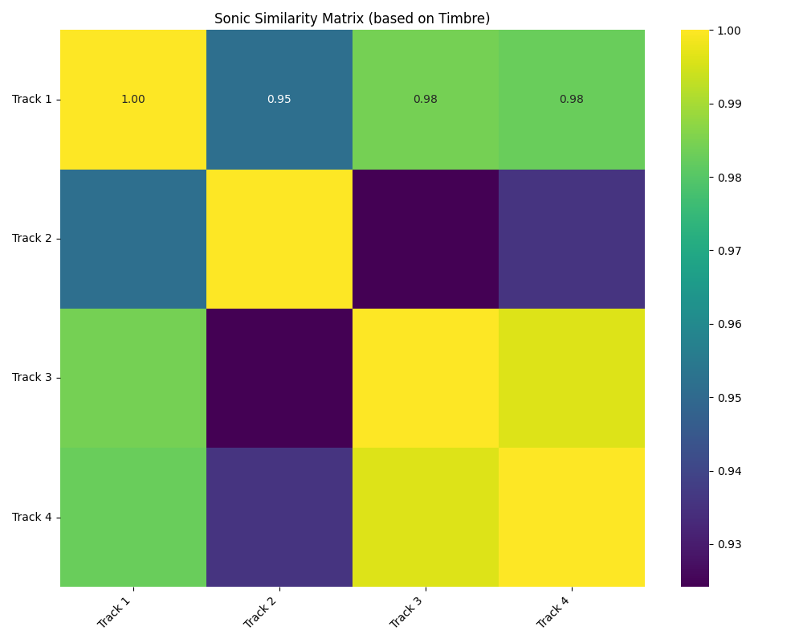
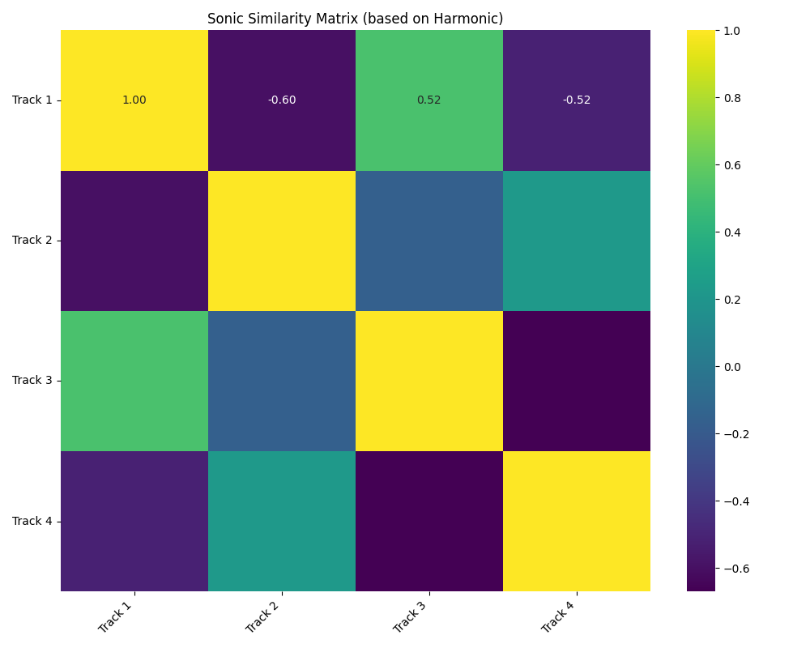

BGM Semiotic Analysis
Assamese Film Music Background Analysis
Track 1: Kothanodi
Mystery and Horror
Traditional Assamese BGM
Interactive Sonic Events Timeline
Filmmaker's Intent & Context
Sound Type: Traditional Assamese instruments (khol-tal-barkah) with strange human voice melodies ("eo-a-o").
Scene Description: Ponai is burying a baby. The background sounds are intended to give the sequence a feeling of mystery.
Primary Themes: Mystery, Horror
Objective Musical Properties
AI-Powered Semiotic Interpretation
| AI Classification | Confidence Level |
|---|---|
| Intrigue | |
| Deep instrumental tones | |
| Suspenseful music | |
| Traditional folk instruments | |
| Human voices chanting |

Semiotic Fingerprint

Temporal Semiotic Analysis

Track 2: Kothanodi
Outrage and Intrigue
Experimental BGM
Interactive Sonic Events Timeline
Filmmaker's Intent & Context
Sound Type: A combination of snake sounds and instruments to express intrigue.
Scene Description: Dhaneshwari's anger is depicted as snake-like, related to a marriage involving a serpent.
Primary Themes: Outrage, Intrigue, Horror
Objective Musical Properties
AI-Powered Semiotic Interpretation
| AI Classification | Confidence Level |
|---|---|
| Horror | |
| Human voices chanting | |
| Intrigue | |
| Suspenseful music | |
| Sound of snakes |

Semiotic Fingerprint

Temporal Semiotic Analysis

Track 3: Aamis
Mental State
Psychological Horror Score
Interactive Sonic Events Timeline
Filmmaker's Intent & Context
Sound Type: A deep instrumental tone.
Scene Description: When Nirmali confesses her acute meat addiction to Suman, this deep sound is used to express the severity of her mental state.
Primary Themes: Thoughts, Horror
Objective Musical Properties
AI-Powered Semiotic Interpretation
| AI Classification | Confidence Level |
|---|---|
| Sadness | |
| Suspenseful music | |
| Mystery | |
| Horror | |
| Deep instrumental tones |

Semiotic Fingerprint

Temporal Semiotic Analysis

Track 4: Aamis
Fear and Apprehension
Building Tension Score
Interactive Sonic Events Timeline
Filmmaker's Intent & Context
Sound Type: A deep instrumental melody that transitions from slow to gradually faster.
Scene Description: Suman has decided to kill someone to satisfy Nirmali's appetite and is searching for a suitable person.
Primary Themes: Fear, Apprehension
Objective Musical Properties
AI-Powered Semiotic Interpretation
| AI Classification | Confidence Level |
|---|---|
| Tension | |
| Fear | |
| Electronic drone | |
| Sensory Roughness | |
| Deep instrumental tones |

Semiotic Fingerprint

Temporal Semiotic Analysis

Comparative & XAI Analysis
Sonic Similarity (Timbre)
Similarity based on the texture and acoustic quality of the sounds.
Sonic Similarity (Harmony)
Similarity based on the harmonic and melodic content.
